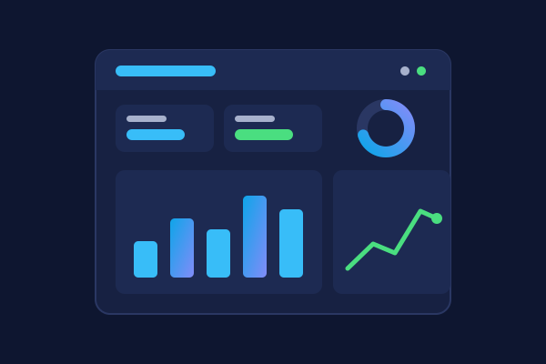

Consultation — PowerBI Dashboard Development
See your numbers.
Run a smarter business.
Live PowerBI dashboards that pull your sales, costs, and operations into one screen — built for owners, not analysts.

The Problem
Sound familiar?
Most small businesses already collect the data they need — it's just trapped in QuickBooks, Excel exports, the POS system, and someone's inbox. Pulling a report means hours of copy-paste, and by the time it's done, the numbers are stale. So decisions get made on gut feel, and problems show up in the bank account before they show up anywhere else.
Our Approach
How we fix it
We connect your existing systems to Microsoft PowerBI and build dashboards around the handful of numbers that actually run your business: daily sales, cash flow, job profitability, inventory, labor cost. Dashboards refresh automatically, work on your phone, and are designed so anyone — not just a data person — can read them at a glance. We finish by training you and your team to use and tweak them yourselves.
What's Included
What you get
- Data source audit — we map where your numbers live (QuickBooks, Excel, POS, CRM)
- KPI workshop — we agree on the metrics that actually matter to your business
- Custom dashboard design and build in PowerBI
- Automated data refresh — no more manual report building
- Phone and tablet access so you can check the business from anywhere
- Handover training and documentation for your team
How It Works
From first call to finished
Consultation
We review your systems and the decisions you struggle to make. You get a written dashboard plan and a flat quote.
Build & connect
We wire up your data sources, model the data, and build the dashboards — usually in one to three weeks.
Handover & train
We walk your team through the dashboards, adjust anything that isn't clear, and leave you documentation.
Is This You?
A great fit for
- Retail shops and restaurants that want daily sales and labor visibility
- Service businesses tracking quotes, jobs, and profitability per project
- Any owner who spends hours each week assembling reports by hand